Context
Abnormal learns the behavior of every identity in a company’s email environment and analyzes the risk of every event to block attacks. By understanding what is normal, it can detect and prevent malicious and unwanted emails that bypass traditional security solutions.
Sometimes, Abnormal gets it wrong. Detection 360 is where customers report missed attacks and false positives and receive a response from Abnormal.
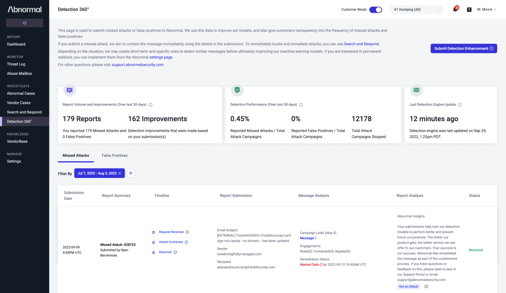
The hypothesis
For high-profile customers — or particularly serious missed attacks — Abnormal’s Support team would sometimes write a custom document explaining why the attack was missed and how the issue would be addressed.
If we could provide useful automated insights for every submission, we could save company time while improving the customer experience by providing meaningful feedback for every case.
User research
I interviewed customers to better understand why they were using Detection 360, what they expected to learn from it, and what information mattered most when reviewing a case. The full research presentation is embedded below.
Problems with the existing experience
Based on the research and my own analysis, I identified a number of issues in the current UI: it was difficult to scan, the table contained too much information at once, hierarchy was weak, and the structure would not scale well to the longer automated insights we planned to add.
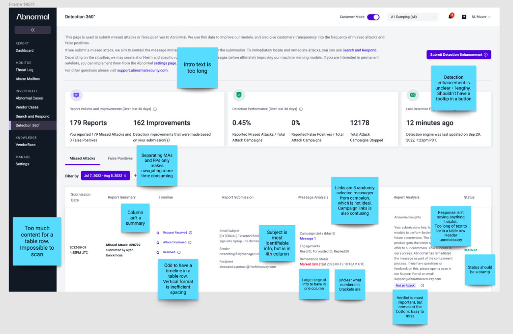
Redesign goals
Make the page much easier to scan and understand quickly.
Design for the addition of detailed insights, which could be lengthy.
Highlight the most important information and reduce competition between fields.
Make the status and meaning of a case understandable even when a user is scanning.
The redesigned Detection 360
I redesigned the experience around an expandable table. Missed attacks and false positives are combined in one table by default, with filtering available when the user needs to narrow the results.
I paid particular attention to which information belonged in the collapsed row versus the expanded view. The row needed to communicate the critical state quickly, while expansion created room for submission details, analysis and insights, remediation status, and campaign information.
Testing an alternate direction
I also designed a version where all of the case information was displayed directly in the table. It made more information visible without interaction, but it made the page substantially denser.
Customers preferred the expandable version because it let them scan the list quickly and only gather more detail when they needed it.
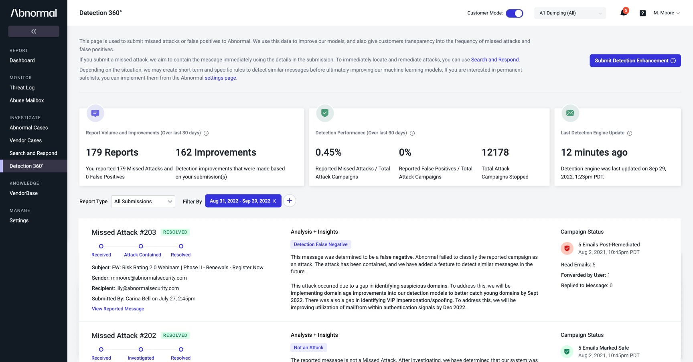
Designing the variations
The expanded row was not a single static template. It needed to communicate different states depending on the report type, investigation status, outcome, and remediation state.
I designed the major variations so the structure stayed consistent while the content and status treatment adapted to the case.
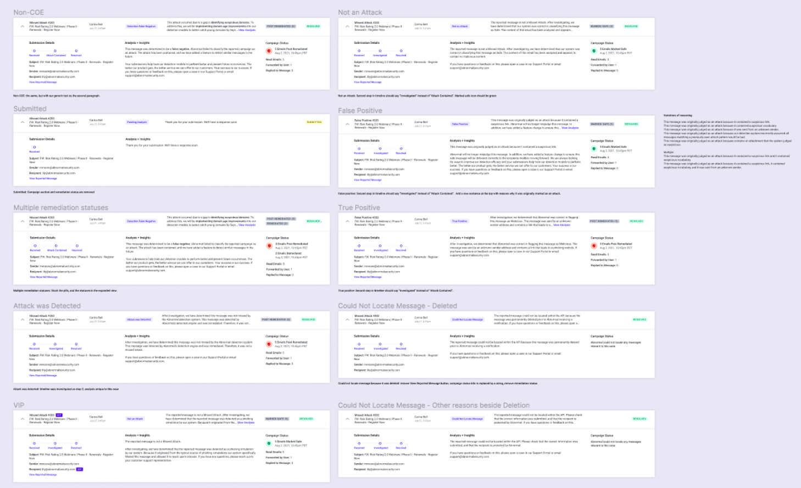
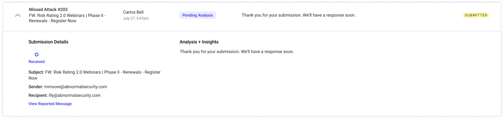
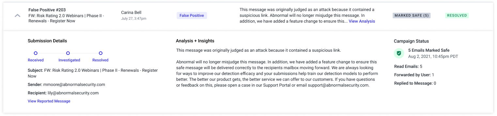
Content design was a major part of the product
A significant part of this project was designing the messaging itself. The response needed to be detailed enough to be useful to security teams, structured enough for engineering to generate automatically, and understandable enough that it still felt like a human explanation rather than a machine-generated status message.
Build reusable reasoning patterns
For example, a false-positive explanation could be caused by a suspicious link, vocabulary, an unknown sender, an attachment, or a combination of signals. We needed sentence structures that could adapt to those combinations without sounding broken or robotic.
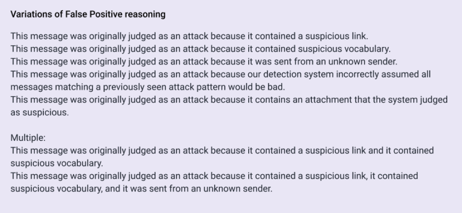
Explain both what happened and what Abnormal would do about it
The content also needed to communicate remediation clearly. In more complex cases, multiple detection gaps and planned improvements could need to be assembled into one coherent response.
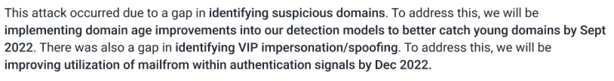
Roadmap and post-launch iterations
After the initial redesign was released, we continued iterating based on feedback from the original research and from customers using the new experience. I worked with the PM and engineering to build a roadmap of follow-up improvements.
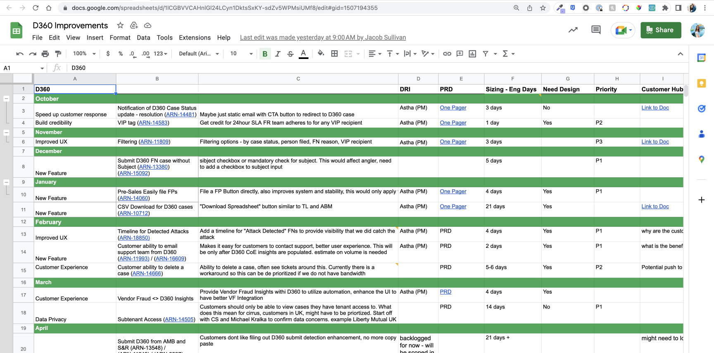
Additional workflow improvements
More powerful filtering
Customers needed more ways to quickly locate the cases they were looking for, so we expanded filtering across details such as sender, recipient, subject, submitter, case number, time, status, and VIP state.
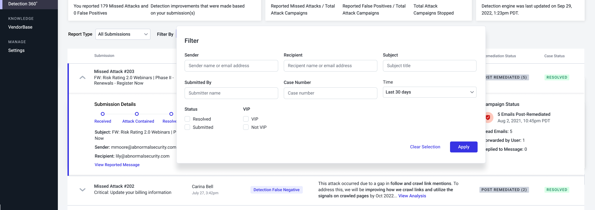
Email notifications
Users were regularly returning to Detection 360 just to check whether a report had been addressed — or missing that it had been resolved because they did not remember to check. We added email notifications so they could leave the dashboard and still know when a case was complete.
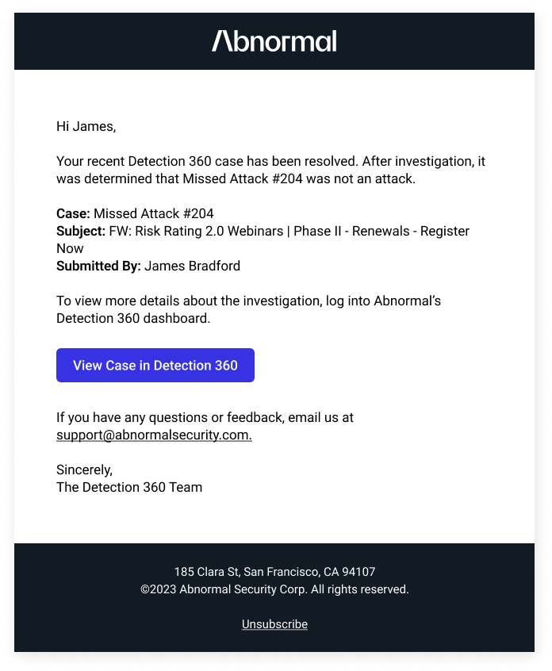
Downloading results
Customers needed to use Detection 360 results in their own reporting, so we added the ability to download case data as a spreadsheet.
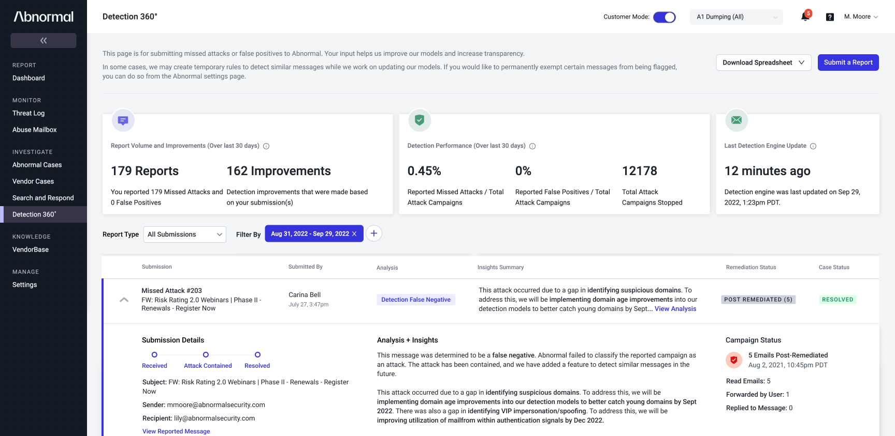
Contact Support directly from a case
Users sometimes needed additional help with a case. The existing support workflow was convoluted and error-prone for both the customer and Support, so we let users contact Support directly from the relevant report.
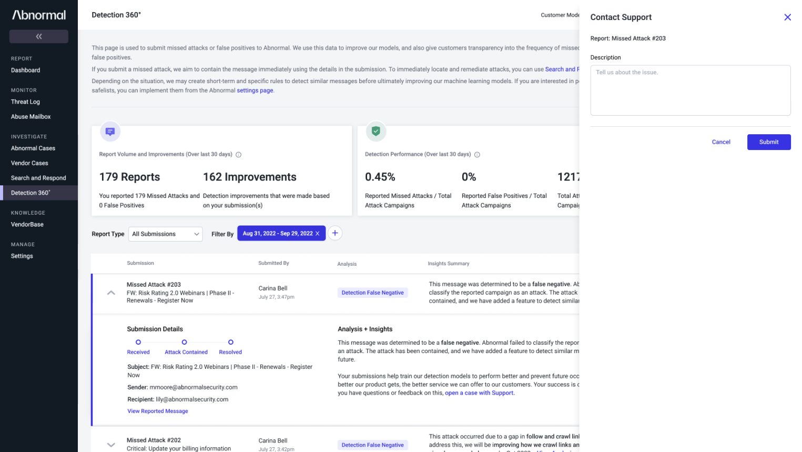
More precise timestamps
Customers wanted to know exactly when an attack was remediated and when the case was resolved, so we added timestamps to the case timeline.
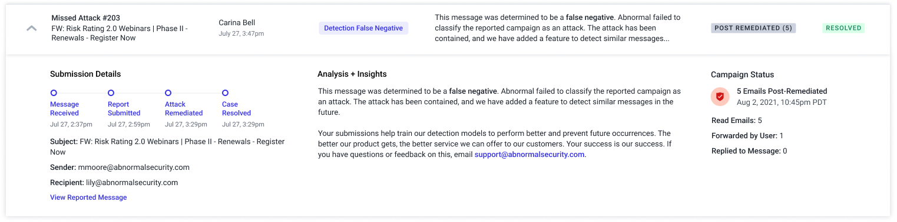
Cancel a mistaken submission
Sometimes a customer submitted a report by mistake. Previously there was no way to stop it, so we added a cancellation action while the case was still pending.
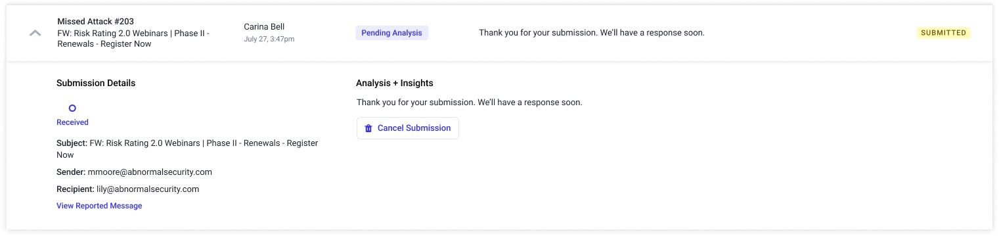
Outcome
We automated 100% of responses to Detection 360 submissions, eliminating 177 manually written documents per week and saving the security analyst team roughly 90 hours of effort every week.